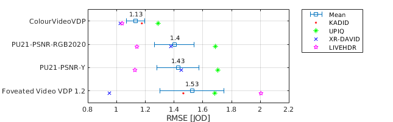

PU21-PSNR-RGB2020
RMSE = 0.9828 PLCC = 0.6319 SROCC = 0.6494Detailed report for:UPIQXR-DAVIDLIVEHDRKADID
 JOD regression: Q = logistic(7.08473e-06, -37630.4, 3.44978)
JOD regression: Q = logistic(7.08473e-06, -37630.4, 3.44978)
The results are reported for the testing portion of the dataset: randomly selected 80% of the conditions. The remaining 20% was used to calibrate FovVideoVDP parameters. The testing set was used to fit JOD regression (JOD regression is not a part of training). The scatter plots and detailed reports (if present) show the entire dataset.
| Metric/Variant | RMSE | PLCC | SROCC | ||||||||||||
| UPIQ | XR-DAVID | LIVEHDR | Average(1) | KADID (TEST) | UPIQ | XR-DAVID | LIVEHDR | Average(2) | KADID (TEST) | UPIQ | XR-DAVID | LIVEHDR | Average(3) | KADID (TEST) | |
| ColourVideoVDP → | 0.851 | 1.257 | 0.6178 | 0.9085 | 1.885 | 0.8232 | 0.6563 | 0.7558 | 0.7979 | 0.8559 | 0.8136 | 0.7211 | 0.8529 | 0.7792 | 0.8634 |
| Foveated Video VDP 1.2 → | 0.7917 | 1.132 | 0.893 | 0.939 | 2.539 | 0.8478 | 0.6683 | 0.722 | 0.8243 | 0.7683 | 0.8308 | 0.6445 | 0.8134 | 0.8017 | 0.8015 |
| PU21-PSNR-RGB2020 → | 1.149 | 1.072 | 0.7276 | 0.9828 | 2.487 | 0.6377 | 0.5897 | 0.6529 | 0.6319 | 0.6525 | 0.6602 | 0.5486 | 0.7626 | 0.6494 | 0.6512 |
| PU21-PSNR-Y → | 1.169 | 1.157 | 0.7414 | 1.023 | 2.567 | 0.6197 | 0.5255 | 0.6372 | 0.6123 | 0.5922 | 0.6407 | 0.469 | 0.7604 | 0.6249 | 0.5957 |
| VMAF (v0.6.1 HDTV) → | 1.483 | 1.264 | 0.9819 | 1.243 | 3.081 | 0.1046 | 6.978e-16 | -0.1838 | 0.09133 | 3.861e-15 | 0.07571 | NaN | -0.0845 | 0.09325 | NaN |
(1)Average RMSE is computed as an average of RMSEs of individual datasets (tranining datasets only) so that each dataset has the same influence on the average RMSE regardless of the number of conditions it contains.
(2-3)Average correlation coeffcients are computed for the consolidated dataset consisting of all the individual datasets (tranining datasets only). It means that the average correlation coefficients are dominated by the performance on UPIQ, which contains over 4000 conditions. For that reason, RMSE is more indicative of metric performance.
Detailed report for:UPIQXR-DAVIDLIVEHDRKADID
Detailed report for:UPIQXR-DAVIDLIVEHDRKADID
Detailed report for:UPIQXR-DAVIDLIVEHDRKADID
JOD regression: Q = logistic(7.08473e-06, -37630.4, 3.44978)